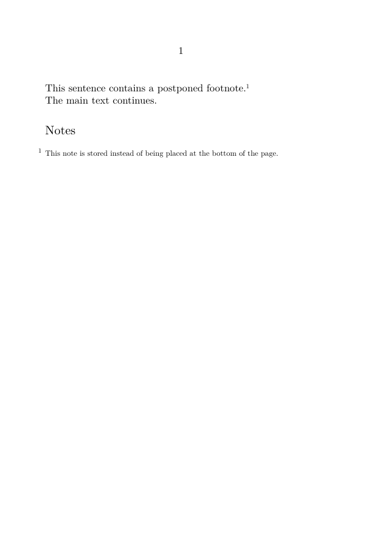
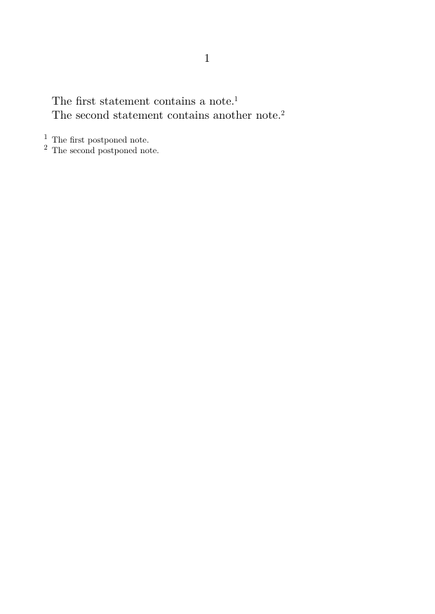
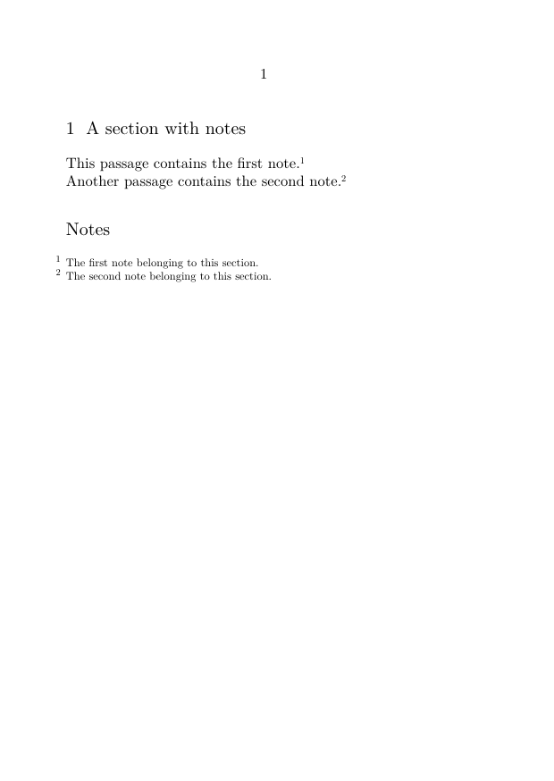
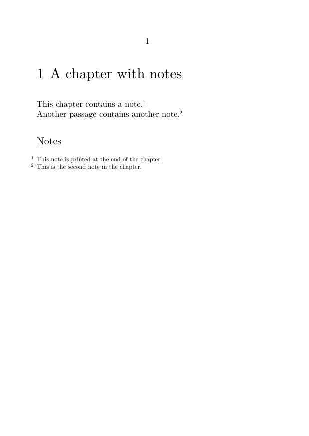
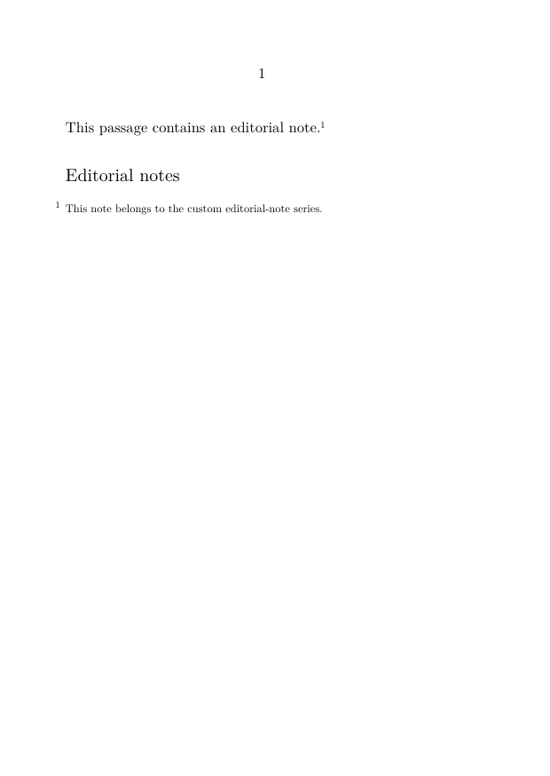
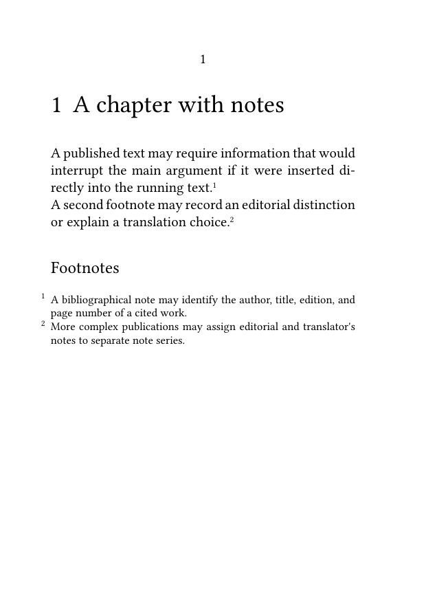

Footnotes in ConTeXt · Overview · Tutorial · How-to guides · Placing footnotes at the end of a section or chapter · Reference · Explanation · Glossary
🚧 Under construction — This guide is currently being revised. Please do not modify its source code while this banner remains in place.
Guide 4 — Placement and collection · Previous: Formatting footnotes · How-to guides overview · Next: Defining and managing multiple note series
Contents
- 1 1. Goal
- 2 2. Postpone the footnote series
- 3 3. Place notes after a short textual unit
- 4 4. Place notes at the end of a section
- 5 5. Place notes at the end of a chapter
- 6 6. Avoid empty note headings
- 7 7. Distinguish postponed footnotes from endnotes
- 8 8. Place a custom note series
- 9 9. Place several note series in a chosen order
- 10 10. Common mistakes
- 11 11. Complete example
- 12 12. What this guide has established
- 13 13. Next steps
1. Goal
Collect ordinary footnotes and print their entries at a chosen point, such as:
- after a short textual unit;
- at the end of a section;
- at the end of a chapter;
- before the end of a larger structural unit.
The basic method is:
-
postpone the predefined
footnoteseries withlocation=text; -
create footnotes normally with
\footnote; -
print the pending entries with
\placefootnotes.
Result
The note marks remain in the running text, while the corresponding entries are collected and printed where \placefootnotes occurs.
2. Postpone the footnote series
By default, ordinary footnote entries are placed automatically at the bottom of the page.
To postpone them, use:
\setupnote [footnote] [location=text]
The entries remain pending until they are placed explicitly.
2.1. MWE: postpone and place ordinary footnotes
-
\setuppapersize[A6] \setupnote [footnote] [location=text] \starttext This sentence contains a postponed footnote.\footnote {This note is stored instead of being placed at the bottom of the page.} The main text continues. \subject{Notes} \placefootnotes \stoptext
-

The command \placefootnotes prints all pending entries from the predefined footnote series.
What changes—and what does not
The logical notes still belong to the ordinary footnote series.
Only the placement of their entries changes.
3. Place notes after a short textual unit
Several footnotes may be collected and printed immediately after a paragraph or a small group of paragraphs.
3.1. MWE: notes after a short passage
-
\setuppapersize[A6] \setupnote [footnote] [location=text] \starttext The first statement contains a note.\footnote {The first postponed note.} The second statement contains another note.\footnote {The second postponed note.} \blank[medium] \placefootnotes \stoptext
-

This is useful for:
- short examples;
- exercises;
- independent source extracts;
- compact editorial units.
Place the notes before leaving the intended unit
Pending entries remain stored until a placement command is encountered.
If \placefootnotes is omitted, the entries will not appear at the intended point.
4. Place notes at the end of a section
A section may collect its own footnotes and print their entries before \stopsection.
4.1. MWE: section notes
-
\setuppapersize[A6] \setupnote [footnote] [location=text] \setupnotation [footnote] [way=bysection] \starttext \startsection[title={A section with notes}] This passage contains the first note.\footnote {The first note belonging to this section.} Another passage contains the second note.\footnote {The second note belonging to this section.} \startsubject[title={Notes}] \placefootnotes \stopsubject \stopsection \stoptext
-

The setting:
way=bysection
restarts the printed numbering for each section.
Numbering and placement are separate
The setting way=bysection controls the numbering sequence.
The command \placefootnotes controls where the pending entries are printed.
Recommended structure
Place the note block before \stopsection so that it remains visibly and structurally attached to the section that created it.
5. Place notes at the end of a chapter
The same method applies to chapters.
5.1. MWE: chapter notes
-
\setuppapersize[A6] \setupnote [footnote] [location=text] \setupnotation [footnote] [way=bychapter] \starttext \startchapter[title={A chapter with notes}] This chapter contains a note.\footnote {This note is printed at the end of the chapter.} Another passage contains another note.\footnote {This is the second note in the chapter.} \startsubject[title={Notes}] \placefootnotes \stopsubject \stopchapter \stoptext
-

The command \placefootnotes must occur before \stopchapter.
The setting:
way=bychapter
restarts the printed numbering at the beginning of each chapter.
The three operations remain distinct
-
\footnotecreates the logical note and its mark; -
way=bychaptercontrols its numbering; -
\placefootnotesprints its entry.
6. Avoid empty note headings
A manually inserted note heading may remain empty when a chapter contains no footnotes.
A setup can test the current footnote counter before creating the heading and placing the entries.
6.1. Test the current counter value
\startsetups[chapter:footnotes] \ifcase\rawcountervalue[footnote]\relax % No footnotes: print nothing. \or \startsubject[title={Footnote}] \placefootnotes \stopsubject \else \startsubject[title={Footnotes}] \placefootnotes \stopsubject \fi \stopsetups
This setup:
- prints nothing when the current footnote counter is zero;
- uses the singular heading Footnote when the counter is one;
- uses the plural heading Footnotes when the counter is greater than one.
Why use \rawcountervalue?
It returns the current numerical value of the footnote counter so that the setup can choose whether to print a heading and note block.
Advanced automation
Test this setup with the numbering and structural resets used by the actual document.
The counter value must correspond to the notes created within the intended structural unit.
6.2. Place chapter notes automatically
The setup can be run when a chapter closes:
\setuphead
[chapter]
[aftersection=\setups{chapter:footnotes}]
6.3. MWE: automatic chapter placement
-
\setuppapersize[A6] \startsetups[chapter:footnotes] \ifcase\rawcountervalue[footnote]\relax \or \startsubject[title={Footnote}] \placefootnotes \stopsubject \else \startsubject[title={Footnotes}] \placefootnotes \stopsubject \fi \stopsetups \setupnote [footnote] [location=text] \setupnotation [footnote] [way=bychapter] \setuphead [chapter] [aftersection=\setups{chapter:footnotes}] \starttext \startchapter[title={Chapter with notes}] This chapter contains one note.\footnote {A note placed automatically at the end of the chapter.} A second note appears here.\footnote {Another note in the same chapter.} \stopchapter \startchapter[title={Chapter without notes}] This chapter contains no footnotes. \stopchapter \stoptext
-

The first chapter receives a note block automatically. The second chapter does not receive an empty heading.
Use structured chapter commands consistently
Because aftersection is run when the chapter closes, use:
\startchapter ... \stopchapter
consistently throughout the document.
7. Distinguish postponed footnotes from endnotes
Postponed footnotes and endnotes may appear in similar locations, but they are not necessarily the same editorial object.
With:
\setupnote [footnote] [location=text]
ordinary footnotes retain their identity and are placed later with:
\placefootnotes
ConTeXt also provides the predefined endnote series:
\endnote{Endnote text}
which is placed with:
\placeendnotes
| Method | Editorial meaning | Placement command |
|---|---|---|
Postponed footnote series
|
Ordinary footnotes whose placement has been changed | \placefootnotes
|
Predefined endnote series
|
A distinct note series intended for endnotes | \placeendnotes
|
Do not treat the two methods as interchangeable
Use postponed footnotes when the same note series merely needs to appear elsewhere.
Use endnotes when the publication requires a distinct editorial category.
8. Place a custom note series
A custom note series can also be postponed and placed explicitly.
8.1. MWE: postponed editorial notes
-
\setuppapersize[A6] \definenote [EdNote] [footnote] \setupnote [EdNote] [location=text] \starttext This passage contains an editorial note.\EdNote {This note belongs to the custom editorial-note series.} \subject{Editorial notes} \placenotes[EdNote] \stoptext
-

The predefined footnote series has the convenience command:
\placefootnotes
A custom series is placed with:
\placenotes[series]
For the creation and configuration of custom series, see:
9. Place several note series in a chosen order
Several postponed note series may be printed as separate blocks.
9.1. MWE: explicit ordering of note blocks
-
\setuppapersize[A6] \setupbodyfont [libertinus,10pt] \definenote [EdNote] [footnote] \definenote [TradNote] [footnote] \setupnote [footnote] [location=text] \setupnote [EdNote] [location=text] \setupnote [TradNote] [location=text] \starttext This sentence contains an ordinary footnote.\footnote {A bibliographical note.} This sentence contains an editorial note.\EdNote {An observation supplied by the editor.} This sentence contains a translator's note.\TradNote {An explanation of a translation choice.} \subject{Footnotes} \placefootnotes \subject{Editorial notes} \placenotes[EdNote] \subject{Translator's notes} \placenotes[TradNote] \stoptext
-

Placement order is explicit
The note blocks appear in the same order as their placement commands in the source.
10. Common mistakes
10.1. Forgetting to change the location
The command:
\placefootnotes
does not by itself prevent ordinary footnote entries from appearing at the bottom of the page.
First set:
\setupnote [footnote] [location=text]
10.2. Placing notes outside the intended structure
For section or chapter notes, place the note block before the corresponding closing command.
For example:
\placefootnotes \stopchapter
Alternatively, automate the placement with a structural hook such as aftersection.
10.3. Forgetting the placement command
With location=text, note entries remain pending until \placefootnotes is called.
10.4. Using
\placefootnotes
for a custom series
For a custom series, use:
\placenotes[EdNote]
10.5. Confusing counter reset with placement
The setting:
way=bychapter
controls numbering. It does not place note entries at the end of the chapter.
Placement still depends on:
\setupnote [footnote] [location=text] \placefootnotes
Most frequent cause of failure
Changing the numbering reset does not postpone or place the notes.
Always configure numbering and placement separately.
11. Complete example
The following MWE demonstrates:
- postponed ordinary footnotes;
- chapter-based numbering;
- automatic placement at the end of a chapter;
- a plural heading when several notes are present;
- suppression of an empty heading in a chapter without notes.
11.1. MWE: automatic chapter note blocks
-
\setuppapersize[A6] \setupbodyfont [libertinus,10pt] \startsetups[chapter:footnotes] \ifcase\rawcountervalue[footnote]\relax \or \startsubject[title={Footnote}] \placefootnotes \stopsubject \else \startsubject[title={Footnotes}] \placefootnotes \stopsubject \fi \stopsetups \setupnote [footnote] [location=text, bodyfont=small] \setupnotation [footnote] [way=bychapter, numberconversion=numbers] \setuphead [chapter] [aftersection=\setups{chapter:footnotes}] \starttext \startchapter[title={A chapter with notes}] A published text may require information that would interrupt the main argument if it were inserted directly into the running text.\footnote {A bibliographical note may identify the author, title, edition, and page number of a cited work.} A second footnote may record an editorial distinction or explain a translation choice.\footnote {More complex publications may assign editorial and translator's notes to separate note series.} \stopchapter \startchapter[title={A chapter without notes}] Not every chapter requires annotation. The automatic placement mechanism should remain silent when no footnotes have been created. \stopchapter \stoptext
-

Compile the example and check that:
- the first chapter ends with the heading Footnotes ;
- its two note entries are printed before the chapter closes;
- the second chapter produces no empty note heading;
- numbering is configured by chapter;
- the note entries use a smaller body font than the main text.
Testing the singular heading
Remove one of the two footnotes from the first chapter.
The setup should then use the singular heading Footnote.
12. What this guide has established
To place ordinary footnotes at the end of a section or chapter:
-
set the predefined series to
location=text; -
create logical notes normally with
\footnote; -
print pending entries with
\placefootnotes; - place the note block before the structural unit closes;
-
use
way=bysectionorway=bychapterwhen numbering should restart; -
automate chapter placement with
aftersectionwhen appropriate; -
use
\placenotes[series]for custom note series.
The key distinction is between creating a logical note, numbering it, and placing its entry.
These operations are related, but each is configured separately.
13. Next steps
13.1. Continue with the next guide
13.3. Consult the documentation
- Consult the note-command reference
- Understand the note mechanism
- Check the terminology used in the footnote documentation
Guide 4 — Placement and collection · Previous: Formatting footnotes · How-to guides overview · Next: Defining and managing multiple note series
Footnotes in ConTeXt · Overview · Tutorial · How-to guides · Placing footnotes at the end of a section or chapter · Reference · Explanation · Glossary